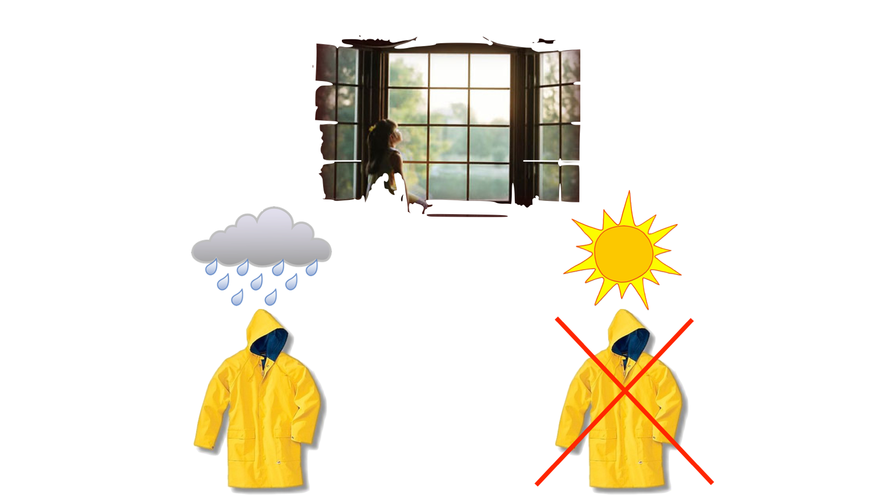
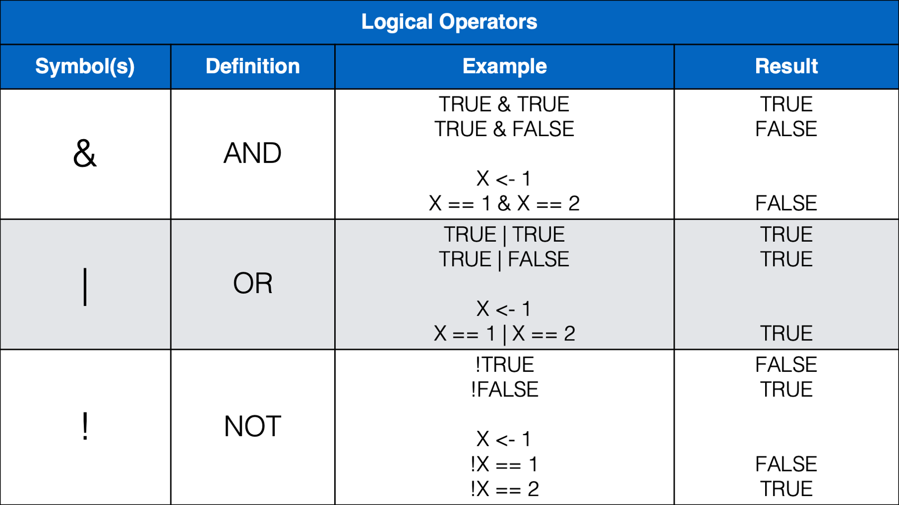

30 Conditional operations
There will often be times that we want to modify the values in one column of our data based on the values in one or more other columns in our data. For example, maybe we want to create a column that contains the region of the country someone is from, based on another column that contains the state they are from.

We don’t really have a way to do this with the tools we currently have in our toolbox. We can manually type out all the region values, but that isn’t very scalable. Wouldn’t it be nice if we could just give R some rules, or conditions (e.g., TX is in the South, CA is in the West), and have R fill in the region values for us? Well, that’s exactly what we are going to learn how to do in this chapter.

These kinds of operations are called conditional operations because we type in a set of conditions, R evaluates those conditions, and then executes a different process or procedure based on whether or not the condition is met.
As a silly example, let’s say that I want my daughter to wear a raincoat if it’s raining outside, but I don’t want her to wear a raincoat if it is not raining outside. So, I give her a conditional request: “If it’s raining outside, then make sure to wear your raincoat, please. Otherwise, please don’t wear your raincoat.”

In this hypothetical scenario, she then says, “yes, dad,” and goes to the window to see if it’s raining. She either puts on, or does not put on, her raincoat depending on whether or not the condition (raining) is met.
Just like I have to ask my daughter to put on a raincoat using conditional logic, I sometimes have to ask R to execute commands using conditional logic, and I have to do so in a way that R understands. One such form is dplyr’s if_else() function. Let’s go ahead and take a look at an example now:
library(dplyr)rainy_days <- tibble(
day = 1:5,
weather = c("rain", "rain", "no rain", "rain", "no rain")
) %>%
print()## # A tibble: 5 × 2
## day weather
## <int> <chr>
## 1 1 rain
## 2 2 rain
## 3 3 no rain
## 4 4 rain
## 5 5 no rain👆Here’s what we did above:
- We simulated some data that contains information about whether or not it rained on each of 5 days.
Now, let’s say that we want to create a new column in our data frame called raincoat. We want the value of raincoat to be wear on rainy days and no wear on days when it isn’t raining. Here’s how we can do that with the if_else() function:
rainy_days %>%
mutate(
raincoat = if_else(
condition = weather == "rain",
true = "wear",
false = "no wear"
)
)## # A tibble: 5 × 3
## day weather raincoat
## <int> <chr> <chr>
## 1 1 rain wear
## 2 2 rain wear
## 3 3 no rain no wear
## 4 4 rain wear
## 5 5 no rain no wear👆Here’s what we did above:
We used
dplyr’sif_else()function to assign the valueswearandno wearto the columnraincoatconditional on the values in each row of theweathercolumn.You can type
?if_elseinto your R console to view the help documentation for this function and follow along with the explanation below.The first argument to the
if_else()function is theconditionargument. The condition should typically be composed of a series of operands and operators (we’ll talk more about these soon) that tell R the condition(s) that we want it to test. For example, is the value ofweatherequal torain?The second argument to the
if_else()function is thetrueargument. The value passed to thetrueargument tells R what value theif_else()function should return when the condition isTRUE. In this case, we toldif_else()to return the character valuewear.The third argument to the
if_else()function is thefalseargument. The value passed to thefalseargument tells R what value theif_else()function should return when the condition isFALSE. In this case, we toldif_else()to return the character valueno wear.Finally, we assigned all the values returned by the
if_else()function to a new column that we namedraincoat.
🗒Side Note: For the rest of the book, I will pass values to the if_else() function by position instead of name. In other words, I won’t write condition =, true =, or false = anymore. However, the first value passed to the if_else() function will always be passed to the condition argument, the second value will always be passed to the true argument, and the third value will always be passed to the false argument.
Before moving on, let’s dive into this a little further. R must always be able to reduce whatever value we pass to the condition argument of if_else() to TRUE or FALSE. That’s how R views any expression we pass to the condition argument. We can literally even pass the value TRUE or the value FALSE (not that doing so has much practical application):
if_else(TRUE, "wear", "no wear")## [1] "wear"Because the value passed to the condition argument is TRUE (in this case, literally), the if_else() function returns the value wear. What happens if we use this code to assign values to the raincoat column?
rainy_days %>%
mutate(
raincoat = if_else(TRUE, "wear", "no wear")
)## # A tibble: 5 × 3
## day weather raincoat
## <int> <chr> <chr>
## 1 1 rain wear
## 2 2 rain wear
## 3 3 no rain wear
## 4 4 rain wear
## 5 5 no rain wearAgain, the if_else() function returns the value wear because the value passed to the condition argument is TRUE. Then, R uses its recycling rules to copy the value wear to every row of the raincoat column. What would do you think will happen if we pass the value FALSE to the condition argument instead?
rainy_days %>%
mutate(
raincoat = if_else(FALSE, "wear", "no wear")
)## # A tibble: 5 × 3
## day weather raincoat
## <int> <chr> <chr>
## 1 1 rain no wear
## 2 2 rain no wear
## 3 3 no rain no wear
## 4 4 rain no wear
## 5 5 no rain no wearHopefully, that was the result you expected. The if_else() function returns the value no wear because the value passed to the condition argument is FALSE. Then, R uses its recycling rules to copy the value no wear to every row of the raincoat column.
We can take this a step further and actually pass a vector of logical (TRUE/FALSE) values to the condition argument. For example:
rainy_days %>%
mutate(
raincoat = if_else(c(TRUE, TRUE, FALSE, TRUE, FALSE), "wear", "no wear")
)## # A tibble: 5 × 3
## day weather raincoat
## <int> <chr> <chr>
## 1 1 rain wear
## 2 2 rain wear
## 3 3 no rain no wear
## 4 4 rain wear
## 5 5 no rain no wearIn reality, that’s sort of what we did in the very first if_else() example above. But, instead of typing the values manually, we used an expression that returned a vector of logical values. Specifically, we used the equality operator (==) to check whether or not each value in the weather column was equal to the value “rain” or not.
rainy_days$weather == "rain"## [1] TRUE TRUE FALSE TRUE FALSEThat pretty much covers the basics of how the if_else() function works. Next, let’s take a look at some of the different combinations of operands and operators that we can combine and pass to the condition argument of the if_else() function.
30.1 Operands and operators
Let’s start by taking a look at some commonly used operands:

As you can see in the table above, operands are the values we want to check, or test. Operands can be variables or they can be individual values (also called constants). The example above (weather == "rain") contained two operands; the variable weather and the character constant "rain". The operator we used in this case was the equality operator (==). Next, let’s take a look at some other commonly used operators.



I think that most of the operators above will be familiar, or a least intuitive, for most of you. However, I do want to provide a little bit of commentary for a few of them.
We haven’t seen the
%in%operator before, but I will wait to discuss it below.Some of you may have been a little surprised by the results we get from using less than (
<) and greater than (>) with characters. It’s basically just testing alphabetical order. A comes before B in the alphabet, so A is less than B. Additionally, when two letters are the same, the upper-case letter is considered greater than the lowercase letter. However, alphabetical order takes precedence over case. So, b is still greater than A even though b is lowercase and A is upper case.Many of you may not have seen the modulus operator (
%%) before. The modulus operator returns the remainder that is left after dividing two numbers. For example, 4 divided by 2 is 2 with a remainder of 0 because 2 goes into 4 exactly two times. Said another way, 2 * 2 = 4 and 4 - 4 = 0. So,4 %% 2 = 0. However, 3 divided by 2 is 1 with a remainder of 1 because 2 goes into 3 one time with 1 left over. Said another way, 2 * 1 = 2 and 3 - 2 = 1. So,3 %% 2 = 1. How is this useful? Well, the only times I can remember using the modulus operator have been when I needed to separate even and odd rows of a data frame. For example, let’s say that we have a data frame where each person has two rows. The first row always corresponds to treatment A and the second row always corresponds to treatment B. However, for some reason (maybe blinding?), there was notreatmentcolumn in the data when we received it. We could use the modulus operator to add atreatmentcolumn like this:
df <- tibble(
id = c(1, 1, 2, 2),
outcome = c(0, 1, 1, 1)
) %>%
print()## # A tibble: 4 × 2
## id outcome
## <dbl> <dbl>
## 1 1 0
## 2 1 1
## 3 2 1
## 4 2 1df %>%
mutate(
# Odd rows are treatment A
# Even rows are treatment B
treatment = if_else(row_number() %% 2 == 1, "A", "B")
)## # A tibble: 4 × 3
## id outcome treatment
## <dbl> <dbl> <chr>
## 1 1 0 A
## 2 1 1 B
## 3 2 1 A
## 4 2 1 B- I also want to remind you that we should always use the
is.na()function to check for missing values. Not the equality operator. Using the equality operator when there are missing values can give results that may be unexpected. For example:
df <- tibble(
name1 = c("Jon", "John", NA),
name2 = c("Jon", "Jon", "Jon")
)df %>%
mutate(
name_match = name1 == name2
)## # A tibble: 3 × 3
## name1 name2 name_match
## <chr> <chr> <lgl>
## 1 Jon Jon TRUE
## 2 John Jon FALSE
## 3 <NA> Jon NAMany of us would expect the third value of the name_match column to be FALSE instead of NA. There are a couple of different ways we can get FALSE in the third row instead of NA. One way, although not necessarily the best way, is to use the if_else() function:
df %>%
mutate(
name_match = name1 == name2,
name_match = if_else(is.na(name_match), FALSE, name_match)
)## # A tibble: 3 × 3
## name1 name2 name_match
## <chr> <chr> <lgl>
## 1 Jon Jon TRUE
## 2 John Jon FALSE
## 3 <NA> Jon FALSE👆Here’s what we did above:
We used
dplyr’sif_else()function to assign the valueFALSEto the columnname_matchwhere the original value ofname_matchwasNA.The value we passed to the
conditionargument wasis.na(name_match). In doing so, we asked R to check each value of thename_matchcolumn and see if it wasNA.If it was
NA, then we wanted to return the value that we passed to thetrueargument. Somewhat confusingly, the value we passed to thetrueargument wasFALSE. All that means is that we wantedif_else()to return the literal valueFALSEwhen the value forname_matchwasNA.If the value in
name_matchwas NOTNA, then we wanted to return the value that we passed to thefalseargument. In this case, we asked R to return the value that already exists in thename_matchcolumn.In more informal language, we asked R to replace missing values in the
name_matchcolumn withFALSEand leave the rest of the values unchanged.
30.2 Testing multiple conditions simultaneously
So far, we have only ever passed one condition to the condition argument of the if_else() function. However, we can pass as many conditions as we want. Having said that, more than 2, or maybe 3, gets very convoluted. Let’s go ahead and take a look at a couple of examples now. We’ll start by simulating some blood pressure data:
blood_pressure <- tibble(
id = 1:10,
sysbp = c(152, 120, 119, 123, 135, 83, 191, 147, 209, 166),
diasbp = c(78, 60, 88, 76, 85, 54, 116, 95, 100, 106)
) %>%
print()## # A tibble: 10 × 3
## id sysbp diasbp
## <int> <dbl> <dbl>
## 1 1 152 78
## 2 2 120 60
## 3 3 119 88
## 4 4 123 76
## 5 5 135 85
## 6 6 83 54
## 7 7 191 116
## 8 8 147 95
## 9 9 209 100
## 10 10 166 106A person may be categorized as having normal blood pressure when their systolic blood pressure is less than 120 mmHG AND their diastolic blood pressure is less than 80 mmHG. We can use this information and the if_else() function to create a new column in our data frame that contains information about whether each person in our simulated data frame has normal blood pressure or not:
blood_pressure %>%
mutate(bp = if_else(sysbp < 120 & diasbp < 80, "Normal", "Not Normal"))## # A tibble: 10 × 4
## id sysbp diasbp bp
## <int> <dbl> <dbl> <chr>
## 1 1 152 78 Not Normal
## 2 2 120 60 Not Normal
## 3 3 119 88 Not Normal
## 4 4 123 76 Not Normal
## 5 5 135 85 Not Normal
## 6 6 83 54 Normal
## 7 7 191 116 Not Normal
## 8 8 147 95 Not Normal
## 9 9 209 100 Not Normal
## 10 10 166 106 Not Normal👆Here’s what we did above:
We used
dplyr’sif_else()function to create a new column in our data frame (bp) that contains information about whether each person has normal blood pressure or not.We actually passed two conditions to the
conditionargument. The first condition was that the value ofsysbphad to be less than120. The second condition was that the value ofdiasbphad to be less than80.Because we separated these conditions with the AND operator (
&), both conditions had to be true in order for theif_else()function to return the value we passed to thetrueargument –Normal. Otherwise, theif_else()function returned the value we passed to thefalseargument –Not Normal.Participant 2 had a systolic blood pressure of 120 and a diastolic blood pressure of 60. Although 60 is less than 80 (condition number 2), 120 is not less than 120 (condition number 1). So, the value returned by the
if_else()function wasNot Normal.Participant 3 had a systolic blood pressure of 119 and a diastolic blood pressure of 88 Although 119 is less than 120 (condition number 1), 88 is not less than 80 (condition number 2). So, the value returned by the
if_else()function wasNot Normal.Participant 6 had a systolic blood pressure of 83 and a diastolic blood pressure of 54. In this case, conditions 1 and 2 were met. So, the value returned by the
if_else()function wasNormal.
This is useful! However, in some cases, we need to be able to test conditions sequentially, rather than simultaneously, and return a different value for each condition.
30.3 Testing a sequence of conditions
Let’s say that we wanted to create a new column in our blood_pressure data frame that contains each person’s blood pressure category according to the following scale:

This is the perfect opportunity to use dplyr’s case_when() function. Take a look:
blood_pressure %>%
mutate(
bp = case_when(
sysbp < 120 & diasbp < 80 ~ "Normal",
sysbp >= 120 & sysbp < 130 & diasbp < 80 ~ "Elevated",
sysbp >= 130 & sysbp < 140 | diasbp >= 80 & diasbp < 90 ~ "Hypertension Stage 1",
sysbp >= 140 | diasbp >= 90 ~ "Hypertension Stage 2"
)
)## # A tibble: 10 × 4
## id sysbp diasbp bp
## <int> <dbl> <dbl> <chr>
## 1 1 152 78 Hypertension Stage 2
## 2 2 120 60 Elevated
## 3 3 119 88 Hypertension Stage 1
## 4 4 123 76 Elevated
## 5 5 135 85 Hypertension Stage 1
## 6 6 83 54 Normal
## 7 7 191 116 Hypertension Stage 2
## 8 8 147 95 Hypertension Stage 2
## 9 9 209 100 Hypertension Stage 2
## 10 10 166 106 Hypertension Stage 2👆Here’s what we did above:
We used
dplyr’scase_when()function to create a new column in our data frame (bp) that contains information about each person’s blood pressure category.You can type
?case_wheninto your R console to view the help documentation for this function and follow along with the explanation below.The
case_when()function only has a single argument – the...argument. You should pass one or more two-sided formulas separated by commas to this argument. What in the heck does that mean?When the help documentation refers to a two-sided formula, it means this:
LHS ~ RHS. Here,LHSmeans left-hand side andRHSmeans right-hand side.The
LHSshould be the condition or conditions that we want to test. You can think of this as being equivalent to theconditionargument of theif_else()function.The
RHSshould be the value you want thecase_when()function to return when the condition on the left-hand side is met. You can think of this as being equivalent to thetrueargument of theif_else()function.The tilde symbol (
~) is used to separate the conditions on the left-hand side and the return values on the right-hand side.
The
case_when()function doesn’t have a direct equivalent to theif_else()function’sfalseargument. Instead, it evaluates each two-sided formula sequentially until if finds a condition that is met. If it never finds a condition that is met, then it returns anNA. I will expand on this more below.Finally, we assigned all the values returned by the
case_when()function to a new column that we namedbp.
🗒Side Note: Traditionally, the tilde symbol is used to represent relationships in a statistical model. Here, it doesn’t have that meaning. I assume this symbol was picked somewhat out of necessity. Remember, any of the comparison operators, arithmetic operators, and logical operators may be used to define a condition in the left-hand side, and commas are used to separated multiple two-sided formulas. Therefore, there aren’t very many symbols left to choose from. Therefore, tilde it is. That’s my guess anyway.
The case_when() function was really useful for creating the bp column above, but there was also a lot going on there. Next, we’ll take a look at a slightly less complex example and clarify a few things along the way.
30.4 Recoding variables
In epidemiology, recoding variables is really common. For example, we may collect information about people’s ages as a continuous variable, but decide that it makes more sense to collapse age into age categories for our analysis. Let’s say that our analysis plan calls for assigning each of our participants to one of the following age categories:
1 = child when the participant is less than 12 years old
2 = adolescent when the participant is between the ages of 12 and less than 18
3 = adult when the participant is 18 years old or older
🗒Side Note: You may not have ever heard of collapsing variables before. It simply means combing two or more values of your variable. We can collapse continuous variables into categories, as we discussed in the example above, or we can collapse categories into broader categories (as you will see with the race category example below). After we collapse a variable, it always contains fewer (and broader) possible values than it contained before we collapsed it.
I’m going to show you how to do this below using the case_when() function. However, I’m going to do it piecemeal so that I can highlight a few important concepts. First, let’s simulate some data that includes 10 participant’s ages.
# Simulate some age data
set.seed(123)
ages <- tibble(
id = 1:10,
age = c(sample(1:30, 9, TRUE), NA)
) %>%
print()## # A tibble: 10 × 2
## id age
## <int> <int>
## 1 1 15
## 2 2 19
## 3 3 14
## 4 4 3
## 5 5 10
## 6 6 18
## 7 7 22
## 8 8 11
## 9 9 5
## 10 10 NAThen, let’s start the process of collapsing the age column into a new column called age_3cat that contains the 3 age categories we discussed above:
ages %>%
mutate(
age_3cat = case_when(
age < 12 ~ 1
)
)## # A tibble: 10 × 3
## id age age_3cat
## <int> <int> <dbl>
## 1 1 15 NA
## 2 2 19 NA
## 3 3 14 NA
## 4 4 3 1
## 5 5 10 1
## 6 6 18 NA
## 7 7 22 NA
## 8 8 11 1
## 9 9 5 1
## 10 10 NA NA👆Here’s what we did above:
We used
dplyr’scase_when()function to create a new column in our data frame (age_3cat) that will eventually categorize each participant into one of 3 categories depending on their continuous age value.Notice that we only passed one two-sided formula to the
case_when()function –age < 12 ~ 1.The
RHSof the two-sided formula isage < 12. This tells thecase_when()function to check whether or not every value in theagecolumn is less than12or not.The
LHSof the two-sided formula is1. This tells thecase_when()function what value to return each time it finds a value less than12in theagecolumn.The tilde symbol is used to separate the
RHSand theLHSof the two-sided formula.
Here is how the
case_when()function basically works. It will test the condition on the left-hand side for each value of the variable, or variables, passed to the left-hand side (i.e.,age). If the condition is met (i.e.,< 12), then it will return the value on the right-hand side of the tilde (i.e.,1). If the condition is not met, it will test the condition in the next two-sided formula. When there are no more two-sided formulas, then it will return anNA.Above, the first value in
ageis15.15is NOT less than12. So,case_when()tries to move on to the next two-sided formula. However, there is no next two-sided formula. So, the first value returned by thecase_when()function isNA. The same is true for the next two values of age.The fourth value in
ageis3.3is less than12. So, the fourth value returned by thecase_when()function is1. And so on…Finally, after the
case_when()function has tested all conditions, the returned values are assigned to a new column that we namedage_3cat.
Notice that I named the new variable
age_3cat. I’m not sure where I picked up this naming convention, but I use it a lot when I collapse variables. The basic format is the name of variable I’m collapsing, an underscore, and the number of categories in the collapsed variable. I like using this convention for two reasons. First, the resulting column names are meaningful and informative. Second, I don’t have to spend any time trying to think of a different meaningful or informative name for my new variable. It’s totally fine if you don’t adopt this naming convention, but I would recommend that you try to use names that are more informative thanage2or something like that.Notice that I used a number (
1) on the right-hand side of the two-sided formula above. We could have used a character value instead (i.e.,child); however, for reasons I discussed in the section on factor variables, I prefer to recode my variables using numeric categories and then later creating a factor version of the variable using the_fnaming convention.
Now, let’s add a second two-sided formula to our case_when() function.
ages %>%
mutate(
age_3cat = case_when(
age < 12 ~ 1,
age >= 12 & age < 18 ~ 2
)
)## # A tibble: 10 × 3
## id age age_3cat
## <int> <int> <dbl>
## 1 1 15 2
## 2 2 19 NA
## 3 3 14 2
## 4 4 3 1
## 5 5 10 1
## 6 6 18 NA
## 7 7 22 NA
## 8 8 11 1
## 9 9 5 1
## 10 10 NA NA👆Here’s what we did above:
We used
dplyr’scase_when()function to create a new column in our data frame (age_3cat) that will eventually categorize each participant into one of 3 categories depending on their continuous age value.Notice that this time we passed two two-sided formulas to the
case_when()function –age < 12 ~ 1andage >= 12 & age < 18 ~ 2.Notice that we separated the two two-sided formulas with a comma (i.e., immediately after the
1inage < 12 ~ 1.Notice that the second two-sided formula is actually testing two conditions. First, it tests whether or not the value of age is greater than or equal to 12. Then, it tests whether or not the value of age is less than 18.
Because we separated the two conditions with the and operator (
&), both must be TRUE forcase_when()to return the value2. Otherwise, it will move on to the next two-sided formula.Above, the first value in
ageis15.15is NOT less than12. So,case_when()moves on to evaluate the next two-sided formula.15is greater than or equal to12AND15is less than18. Because both conditions of the second two-sided formula were met,case-when()returns the value on the right-hand side of the second two-sided formula –2. So, the first value returned by thecase_when()function is2.The second value in
ageis19.19is NOT less than12. So,case_when()moves on to evaluate the next two-sided formula.19is greater than or equal to12, but19is NOT less than18. So,case_when()tries to move on to the next two-sided formula. However, there is no next two-sided formula. So, the second value returned by thecase_when()function isNA.The fourth value in
ageis3.3is less than12. So, the fourth value returned by thecase_when()function is1. At this point, because a condition was met,case_when()does not continue checking the current value ofageagainst the remaining two-sided formulas. It returns a1and moves on to the next value ofage.Finally, after the
case_when()function has tested all conditions, the returned values are assigned to a new column that we namedage_3cat.
In everyday speech, we may express the second two-sided condition above as “categorize all people between the ages of 12 and 18 as an adolescent.” I want to make two points about that before moving on.
First, while that statement may be totally reasonable in everyday speech, it isn’t quite specific enough for what we are trying to do here. “Between 12 and 18” is a little bit ambiguous. What category is a person put in if they are exactly 12? What category are they put in if they are exactly 18? So, clearly we need to be more precise. I’m not aware of any hard and fast rules for making these kinds of decisions about categorization, but I tend to include the lower end of the range in the current category and exclude the value on the upper end of the range in the current category. So, in the example above, I would say, “categorize all people between the ages of 12 and less than 18 as an adolescent.”
Second, when we are testing for a “between” condition like this one, I often see students write code like this:
age >= 12 & < 18. R won’t understand that. You have to use the column name in each condition to be tested (i.e.,age >= 12 & age < 18), even though it doesn’t change. Otherwise, you get an error that looks something like this:
ages %>%
mutate(
age_3cat = case_when(
age < 12 ~ 1,
age >= 12 & < 18 ~ 2
)
)## Error: <text>:5:19: unexpected '<'
## 4: age < 12 ~ 1,
## 5: age >= 12 & <
## ^Ok, let’s go ahead and wrap up this age category variable:
ages %>%
mutate(
age_3cat = case_when(
age < 12 ~ 1,
age >= 12 & age < 18 ~ 2,
age >= 18 ~ 3
)
)## # A tibble: 10 × 3
## id age age_3cat
## <int> <int> <dbl>
## 1 1 15 2
## 2 2 19 3
## 3 3 14 2
## 4 4 3 1
## 5 5 10 1
## 6 6 18 3
## 7 7 22 3
## 8 8 11 1
## 9 9 5 1
## 10 10 NA NA👆Here’s what we did above:
- We used
dplyr’scase_when()function to create a new column in our data frame (age_3cat) that categorized each participant into one of 3 categories depending on their continuous age value.
30.5 case_when() is lazy
What do I mean when I say that case_when() is lazy? Well, it may not have registered when I mentioned it above, but case_when() stops evaluating two-sided functions for a value as soon as it finds one that is TRUE. For example:
df <- tibble(
number = c(1, 2, 3)
) %>%
print()## # A tibble: 3 × 1
## number
## <dbl>
## 1 1
## 2 2
## 3 3df %>%
mutate(
size = case_when(
number < 2 ~ "Small",
number < 3 ~ "Medium",
number < 4 ~ "Large"
)
)## # A tibble: 3 × 2
## number size
## <dbl> <chr>
## 1 1 Small
## 2 2 Medium
## 3 3 LargeWhy wasn’t the value for the size column Large in every row of the data frame? After all, 1, 2, and 3 are all less than 4, and number < 4 was the final possible two-sided formula that could have been evaluated for each value of number. The answer is that case_when() is lazy. The first value in number is 1. 1 is less than 2. So, the condition in the first two-sided formula evaluates to TRUE. So, case_when() immediately returns the value on the right-hand side (Small) and does not continue checking two-sided formulas. It moves on to the next value of number.
The fact that case_when() is lazy isn’t a bad thing. It’s just something to be aware of. In fact, we can often use it to our advantage. For example, we can use case_when()’s laziness to rewrite the age_3cat code from above a little more succinctly:
ages %>%
mutate(
age_3cat = case_when(
age < 12 ~ 1,
age < 18 ~ 2,
age >= 18 ~ 3
)
)## # A tibble: 10 × 3
## id age age_3cat
## <int> <int> <dbl>
## 1 1 15 2
## 2 2 19 3
## 3 3 14 2
## 4 4 3 1
## 5 5 10 1
## 6 6 18 3
## 7 7 22 3
## 8 8 11 1
## 9 9 5 1
## 10 10 NA NA👆Here’s what we did above:
- Because
case_when()is lazy, we were able to omit theage >= 12condition from the second two-sided formula. It’s unnecessary because the value1is immediately returned for every person with anagevalue less than12. By definition, any value being evaluated in the second two-sided function (age < 18) has an age value greater than or equal to 12.
30.6 Recode missing
We’ve already talked about how R uses the special NA value to represent missing data. We’ve also learned how to convert other representations of missing data (e.g., “.”) to NA when we are importing data. However, It is extremely common for data sets that we use in epidemiology to include “don’t know” and “refused” answer options in addition to true “missing”. By convention, those options are often coded as 7 and 9. For questions that include 7 or more response options (e.g., month), then 77 and 99 are commonly used to represent “don’t know” and “refused”. For questions that include 77 or more response options (e.g., age), then 777 and 999 are commonly used to represent “don’t know” and “refused”.
Differentiating between true missing (i.e., the respondent was never asked the question or just left the response blank on a written questionnaire), don’t know (i.e., the respondent doesn’t know the answer), and refused (i.e., the respondent knows the answer, but doesn’t want to reveille it – possibly out of shame, fear, or embarrassment) can be of some interest for survey design purposes. However, all three of the values described above typically just amount to missing data by the time you get around to the substantive analyses. In other words, knowing that a person refused to give their age doesn’t help me figure out how old they are any more than if they had never been asked at all. Therefore, we commonly use conditional operations in epidemiology to recode these kinds of values to explicitly missing values (NA).
We’ll walk through an example below, but first we will simulate some additional data. Specifically, we’ll add a race column and a hispanic column to our ages data frame, and name the new data frame demographics.
Let’s assume that we have a survey that asks people what race they most identify with. For the moment, let’s assume that they can only select one race. Further, let’s say that the options they are given to select from are:
1 = White
2 = Black or African American
3 = American Indian or Alaskan Native
4 = Asian
5 = Pacific Islander
7 = Don’t know
9 = Refused
Let’s say that we also ask if they self-identify their ethnicity as Hispanic or not. The options they are given to select from are:
0 = No, not Hispanic
1 = Yes, Hispanic
7 = Don’t know
9 = Refused
demographics <- ages %>%
mutate(
race = c(1, 2, 1, 4, 7, 1, 2, 9, 1, 3),
hispanic = c(7, 0, 1, 0, 1, 0, 1, 9, 0, 1)
) %>%
print()## # A tibble: 10 × 4
## id age race hispanic
## <int> <int> <dbl> <dbl>
## 1 1 15 1 7
## 2 2 19 2 0
## 3 3 14 1 1
## 4 4 3 4 0
## 5 5 10 7 1
## 6 6 18 1 0
## 7 7 22 2 1
## 8 8 11 9 9
## 9 9 5 1 0
## 10 10 NA 3 1A very common way that we may want to transform data like this is to collapse race and ethnicity into as single combined race and ethnicity column. Further, notice that American Indian or Alaskan Native race and Asian race are only observed once each, and Pacific Islander race is not observed at all. When values are observed very few times in the data like this, it is common to collapse them into an “other” category. Therefore, our new combined race and ethnicity column will have the following possible values:
1 = White, non-Hispanic
2 = Black, non-Hispanic
3 = Hispanic, any race
4 = Other race, non-Hispanic
There are multiple ways that we can create this new column. We could start by using if_else() to recode 7 and 9 to missing:
demographics %>%
mutate(
# Recode 7 and 9 to missing
race_recode = if_else(race == 7 | race == 9, NA, race),
hispanic_recode = if_else(hispanic == 7 | hispanic == 9, NA, hispanic)
)## Error in `mutate()`:
## ! Problem while computing `race_recode = if_else(race == 7 | race == 9, NA, race)`.
## Caused by error in `if_else()`:
## ! `false` must be a logical vector, not a double vector.I intentionally made this error because it’s a really easy one to make, and you will probably make it too. If you look back to the Let’s get programming chapter, you will see that I briefly discussed the NA value being type logical by default. I also talked about “type coercion” and how most of the time you don’t have to worry about it. I said that R generally coerces NA to NA_character or NA_double or whatever for you under the hood, automatically. I also said that sometimes it doesn’t, especially when using the if_else() and case_when() functions, and it will cause R to give you an error. Finally, I said I would discuss it later. It’s later now. Long story short, the developers of the if_else() function do this on purpose to make the function’s returned result more predictable and slightly faster.
For you, it just means that you have to remember to use NA_character, NA_integer, or NA_real as appropriate. For example, the error message above says, “false must be a logical vector, not a double vector.” This means that the value we passed to the false argument was type double, but if_else() was expecting it to be type logical. Why? Well, if_else() was expecting it to be type logical because the value we passed to the true argument (NA) is type logical, and vectors can only ever have one type. To fix this error, we simply need to change the value we are passing to the true argument from logical (NA) to double (NA_real) so that it matches the values we are passing to the false argument.
Let’s try again using NA_real instead of NA.
demographics %>%
mutate(
# Recode 7 and 9 to missing
race_recode = if_else(race == 7 | race == 9, NA_real_, race),
hispanic_recode = if_else(hispanic == 7 | hispanic == 9, NA_real_, hispanic)
)## # A tibble: 10 × 6
## id age race hispanic race_recode hispanic_recode
## <int> <int> <dbl> <dbl> <dbl> <dbl>
## 1 1 15 1 7 1 NA
## 2 2 19 2 0 2 0
## 3 3 14 1 1 1 1
## 4 4 3 4 0 4 0
## 5 5 10 7 1 NA 1
## 6 6 18 1 0 1 0
## 7 7 22 2 1 2 1
## 8 8 11 9 9 NA NA
## 9 9 5 1 0 1 0
## 10 10 NA 3 1 3 1Great! We can move on with creating our new race and ethnicity column now that we’ve explicitly transformed 7’s and 9’s to NA. There’s nothing “new” in the code below, so I’m not going to explain it line-by-line. However, it’s a little bit dense, so I recommend that you take a few minutes to review it thoroughly and make sure you understand what each line is doing.
demographics %>%
mutate(
# Recode 7 and 9 to missing
race_recode = if_else(race == 7 | race == 9, NA_real_, race),
hispanic_recode = if_else(hispanic == 7 | hispanic == 9, NA_real_, hispanic),
race_eth_4cat = case_when(
# White, non-Hispanic
race_recode == 1 & hispanic_recode == 0 ~ 1,
# Black, non-Hispanic
race_recode == 2 & hispanic_recode == 0 ~ 2,
# American Indian or Alaskan Native to Other race, non-Hispanic
race_recode == 3 & hispanic_recode == 0 ~ 4,
# Asian to Other race, non-Hispanic
race_recode == 4 & hispanic_recode == 0 ~ 4,
# Pacific Islander to Other race, non-Hispanic
race_recode == 4 & hispanic_recode == 0 ~ 4,
# Hispanic, any race
hispanic_recode == 1 ~ 3
)
)## # A tibble: 10 × 7
## id age race hispanic race_recode hispanic_recode race_eth_4cat
## <int> <int> <dbl> <dbl> <dbl> <dbl> <dbl>
## 1 1 15 1 7 1 NA NA
## 2 2 19 2 0 2 0 2
## 3 3 14 1 1 1 1 3
## 4 4 3 4 0 4 0 4
## 5 5 10 7 1 NA 1 3
## 6 6 18 1 0 1 0 1
## 7 7 22 2 1 2 1 3
## 8 8 11 9 9 NA NA NA
## 9 9 5 1 0 1 0 1
## 10 10 NA 3 1 3 1 3The code above works, and it is very explicit. However, we can definitely make it more succinct and easier to read. For example:
demographics %>%
mutate(
race_eth_4cat = case_when(
is.na(hispanic) | hispanic %in% c(7, 9) ~ NA_real_, # Unknown ethnicity
hispanic == 1 ~ 3, # Hispanic, any race
is.na(race) | race %in% c(7, 9) ~ NA_real_, # non-Hispanic, unknown race
race == 1 ~ 1, # White, non-Hispanic
race == 2 ~ 2, # Black, non-Hispanic
TRUE ~ 4 # Other race, non-Hispanic
)
)## # A tibble: 10 × 5
## id age race hispanic race_eth_4cat
## <int> <int> <dbl> <dbl> <dbl>
## 1 1 15 1 7 NA
## 2 2 19 2 0 2
## 3 3 14 1 1 3
## 4 4 3 4 0 4
## 5 5 10 7 1 3
## 6 6 18 1 0 1
## 7 7 22 2 1 3
## 8 8 11 9 9 NA
## 9 9 5 1 0 1
## 10 10 NA 3 1 3👆Here’s what we did above:
We used
dplyr’scase_when()function to create a new column in our data frame (race_eth_4cat) that categorized each participant into one of 4 race and ethnicity categories depending on their values in theracecolumn and thehispaniccolumn.Compared to the first method we used, the second method doesn’t explicitly create new
raceandhispaniccolumns with the7’s and9’s recoded toNA. In the second method, those columns aren’t needed.The very first two-sided formula tells
case_when()to set the value ofrace_eth_4cattoNA_real_when the value ofhispanicis missing.We put this two-sided formula first because if we don’t know a person’s Hispanic ethnicity, then we can’t put them into any category of
race_eth_4cat. All categories ofrace_eth_4catare dependent on a known value forhispanic. For example, look at participant number 1. They reported being white, but they don’t give their ethnicity. Which category do we put them in? We can’t put them inWhite, non-Hispanicbecause they very well could be Hispanic. We can’t put them inHispanic, any racebecause they very well could be non-Hispanic. We don’t know. We never will. We code them as missing and don’t evaluate any further. And becausecase_when()is lazy, any other participants with a missing value forhispanicwould also only have this first two-sided formula evaluated.There were no actual
NAvalues in thehispaniccolumn, but I put it in the code for completeness. There will be some true missing (NA) values in most real-world data sets.Notice that we finally used the
%in%operator above (hispanic %in% c(7, 9)). This is equivalent to typinghispanic == 7 | hispanic == 9. Notice that’s an OR. In this case, it doesn’t save us a ton of typing and visual clutter, but in many cases it can.
The second two-sided formula tells
case_when()to set the value ofrace_eth_4catto3(i.e., Hispanic any-race) when the value ofhispanicis1. Why did we put this second? If we know that someone is Hispanic, does it matter what race they reported? Nope! No matter what race they reported (even missing race) they get coded asHispanic, any race. And becausecase_when()is lazy, putting this two-sided formula second has two advantages:Any other participants with a value of
1forhispanicwould only have the first two two-sided formulas evaluated. In other words, for each Hispanic participant, R would only evaluate 2 two-sided formulas instead of the 6 we used in the first method. With only 10 participants in the data, we won’t notice any performance improvement. But, this performance improvement can add up when we have thousands or millions of rows.It allows us to remove the
hispanic == 0from the remaining two-sided formulas. Think about it. All participants with a missing value forhispanicwere accounted for in the first two-sided formula. All participants with a1forhispanicwere accounted for in the second two-sided formula. By definition, any participant left in the data must have a value of0forhispanic. There’s no need to write that code and there’s no need for R to evaluate that condition. Less typing for us and further performance improvements to boot.
The third two-sided formula tells
case_when()to set the value ofrace_eth_4cattoNA_real_when the value ofraceis missing. At this point in the code, there are no participants left with a value of1forhispanic. Therefore, if they are missing a value forracewe won’t be able to assign them a value forrace_eth_4cat. We code them as missing and don’t evaluate any further.The fourth and fifth two-sided formulas tell
case_when()to set the value ofrace_eth_4catto1and2respectively when the value ofraceis1and2.The final two-sided formula is simply
TRUE ~ 4. This tellscase_when()to set the value ofrace_eth_4catto4when none of the other two-sided formulas above evaluated toTRUE. Why did we do this? Well, every participant with missing data has been accounted for, everyHispanicparticipant has been accounted for, everyWhite, non-Hispanicparticipant has been accounted for, and everyBlack, non-Hispanicparticipant has been accounted for. Because case_when() is lazy, we know that any participant that makes it to this part of the code must fall into theOther race, non-Hispaniccategory.- Notice that there is nothing at all about
raceorhispanicin this two-sided formula. It just saysTRUE. What doescase_when()do when a condition on the left-hand side evaluates toTRUE? It returns the value on the right-hand side. In this case4.
- Notice that there is nothing at all about
⚠️Warning: Sometimes, adding an a final TRUE condition like the one above can be really useful. However, you have to be really careful. You can easily get unintended results if you aren’t absolutely sure that you’ve already accounted for every possible combination of relevant conditions in the two-sided formulas that come before.
Let’s go ahead and wrap up this chapter with one consolidated code chunk that cleans our demographics data:
demographics %>%
# Recode variables
mutate(
# Collapse continuous age into 3 categories
age_3cat = case_when(
age < 12 ~ 1, # child
age < 18 ~ 2, # adolescent
age >= 18 ~ 3 # adult
),
age_3cat_f = factor(
age_3cat,
labels = c("child", "adolescent", "adult")
),
# Combine race and ethnicity
race_eth_4cat = case_when(
is.na(hispanic) | hispanic %in% c(7, 9) ~ NA_real_, # Unknown ethnicity
hispanic == 1 ~ 3, # Hispanic, any race
is.na(race) | race %in% c(7, 9) ~ NA_real_, # non-Hispanic, unknown race
race == 1 ~ 1, # White, non-Hispanic
race == 2 ~ 2, # Black, non-Hispanic
TRUE ~ 4 # Other race, non-Hispanic
),
race_eth_4cat_f = factor(
race_eth_4cat,
labels = c(
"White, non-Hispanic", "Black, non-Hispanic", "Hispanic, any race",
"Other race, non-Hispanic"
)
)
)## # A tibble: 10 × 8
## id age race hispanic age_3cat age_3cat_f race_eth_4cat race_eth_4cat_f
## <int> <int> <dbl> <dbl> <dbl> <fct> <dbl> <fct>
## 1 1 15 1 7 2 adolescent NA <NA>
## 2 2 19 2 0 3 adult 2 Black, non-Hispanic
## 3 3 14 1 1 2 adolescent 3 Hispanic, any race
## 4 4 3 4 0 1 child 4 Other race, non-Hispanic
## 5 5 10 7 1 1 child 3 Hispanic, any race
## 6 6 18 1 0 3 adult 1 White, non-Hispanic
## 7 7 22 2 1 3 adult 3 Hispanic, any race
## 8 8 11 9 9 1 child NA <NA>
## 9 9 5 1 0 1 child 1 White, non-Hispanic
## 10 10 NA 3 1 NA <NA> 3 Hispanic, any raceNow that we’ve mastered conditional operations, we can use them to help us navigate another common data collection technique in epidemiology – skip patterns.